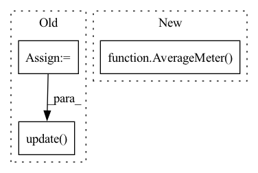

Pattern ID :24394
Before Change
optimizer.step()
// measure elapsed time
t = time.time() - end
batch_time.update(t)
speed.update( args.world_size*args.batch_size/t)
end = time.time()
if i % args.print_freq == 0:
progress.display(i)After Change
def train(train_loader, model, criterion, optimizer, epoch, gpu, args):
batch_time = AverageMeter()
losses = AverageMeter()
top1 = AverageMeter()
top5 = AverageMeter()
// switch to train mode
model.train()In pattern: SUPERPATTERN
Frequency: 3
Non-data size: 3
Instances Fragment ID: 75717857
Project Name: richardkxu/distributed-pytorch
Commit Name: b5d0793a1bac4df6a31ab0dd1959baee4ab12809
Time: 2020-02-06
Author: richardkxu@gmail.com
File Name: imagenet_ddp_mixprec.py
M Class Name: AnonimousClass
N Class Name: AnonimousClass
M Method Name: train(7)
N Method Name: train(7)
M Parent Class:
N Parent Class:
M File Name: imagenet_ddp_mixprec.py
N File Name: imagenet_ddp_mixprec.py
M Start Line: 257
M End Line: 306
N Start Line: 237
N End Line: 288
Before Change
top5.update(acc5[0], images.size(0))
// measure elapsed time
t = time.time() - end
batch_time.update(t)
speed.update( args.world_size*args.batch_size/t)
end = time.time()
if i % args.print_freq == 0:
progress.display(i)After Change
def validate(val_loader, model, criterion, gpu, args):
batch_time = AverageMeter()
losses = AverageMeter()
top1 = AverageMeter()
top5 = AverageMeter()
// switch to evaluate mode Fragment ID: 75717856
Project Name: richardkxu/distributed-pytorch
Commit Name: b5d0793a1bac4df6a31ab0dd1959baee4ab12809
Time: 2020-02-06
Author: richardkxu@gmail.com
File Name: imagenet_ddp_mixprec.py
M Class Name: AnonimousClass
N Class Name: AnonimousClass
M Method Name: validate(5)
N Method Name: validate(5)
M Parent Class:
N Parent Class:
M File Name: imagenet_ddp_mixprec.py
N File Name: imagenet_ddp_mixprec.py
M Start Line: 310
M End Line: 346
N Start Line: 292
N End Line: 331
Before Change
// TODO abstract weight into a class
weight = 1. - D(f_s)
weight = weight / weight.mean()
weight = weight.detach()
// domain adversarial loss for D_0
adv_loss_D_0 = domain_adv_D_0(f_s, f_t, w_s=weight)
// entropy loss
y_t = F.softmax(y_t, dim=1)
entropy_loss = entropy(y_t, reduction="mean")
loss = cls_loss + 1.5 * args.trade_off * adv_loss_D + \
args.trade_off * adv_loss_D_0 + args.gamma * entropy_loss
// compute gradient and do SGD step
optimizer.zero_grad()
loss.backward()
optimizer.step()
lr_scheduler.step()
cls_acc = accuracy(y_s, labels_s)[0]
tgt_acc = accuracy(y_t, labels_t)[0]
losses.update(loss.item(), x_s.size(0))
cls_accs.update(cls_acc.item(), x_s.size(0))
tgt_accs.update(tgt_acc.item(), x_s.size(0))
domain_accs_D.update(domain_adv_D.domain_discriminator_accuracy, x_s.size(0))
domain_accs_D_0.update(domain_adv_D_0.domain_discriminator_accuracy, x_s.size(0))
labels_in_target = torch.FloatTensor([c in target_idxes for c in labels_s]).to(device)
labels_in_target_num = labels_in_target.sum()
if labels_in_target_num != 0:
avg_importance = (weight.squeeze() * labels_in_target / labels_in_target_num).sum()
importance_weights.update( avg_importance.item(), int(labels_in_target_num.item()))
batch_time.update(time.time() - end)
end = time.time()
After Change
domain_accs_D = AverageMeter("Domain Acc for D", ":3.1f")
domain_accs_D_0 = AverageMeter("Domain Acc for D_0", ":3.1f")
partial_classes_weights = AverageMeter("Partial Weight", ":3.2f")
non_partial_classes_weights = AverageMeter( "Non-Partial Weight", ":3.2f")
progress = ProgressMeter(
args.iters_per_epoch,
[batch_time, data_time, losses, cls_accs, tgt_accs, Fragment ID: 75717854
Project Name: thuml/transfer-learning-library
Commit Name: b572f553f392040359d3e98ded8c73f97fd042a0
Time: 2021-02-08
Author: 13126830206@163.com
File Name: examples-da/partial/iwan.py
M Class Name: AnonimousClass
N Class Name: AnonimousClass
M Method Name: train(10)
N Method Name: train(11)
M Parent Class:
N Parent Class:
M File Name: examples-da/partial/iwan.py
N File Name: examples-da/partial/iwan.py
M Start Line: 171
M End Line: 254
N Start Line: 173
N End Line: 251